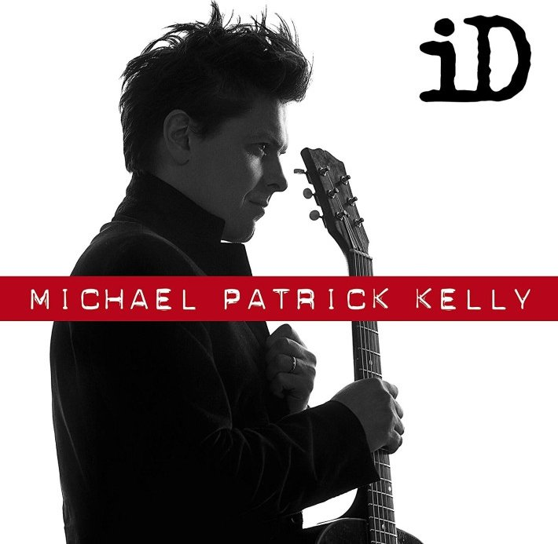
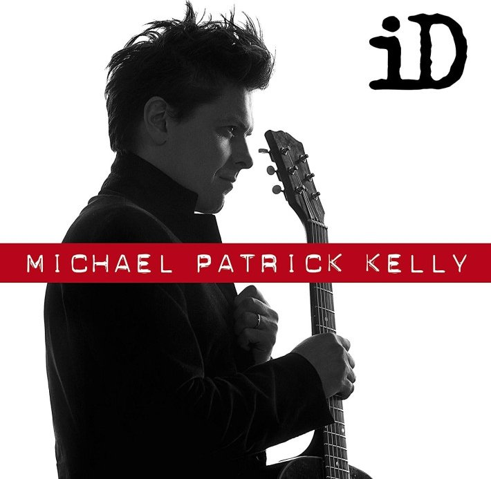

 ‚Üê Back
‚Üê Back
Albums, lyrics, listening
Complete lyrics, organized by album üéµ Michael Patrick Kelly üéµ
TRACES 2025
Traces album officially set for release on 31 October 2025. The lead single, ❤️ The One ❤️
offers a first glimpse into an album that embraces enduring love over fleeting passion.
THE ONE ▾
THE ONE
we were strangers
After the thunder cried, the lightning was kind of amazing
I got lost in your glow, felt so high even though I was sober
You had a reckless style and your smile was rarer than gold dust
The way we hold on, it's a miracle
This is a love song forever in the makin'
Oh, the years go by
But you still light up, light up my heart
Oh, you know time flies
But you still light up, light up my dark
It's been the wildest dream, a masterpiece
Let's ride around the sun
Darlin', after all this time, you're still the one
People come, people go, nothin' lasts anymore, it's a strange world
But dreaming side by side, I wake up believin' in angels
Yeah, you know the way the sparks still fly, how you read my mind, it's electric
And when I leave this life, I'll know loving you was always the best bit
The way we hold on, it's a miracle
This is a love song forever in the makin'
Oh, the years go by
But you still light up, light up my heart
Oh, you know time flies
But you still light up, light up my dark
It's been the wildest dream, a masterpiece
Let's ride around the sun
Darling, after all this time, you're still the one
Still the one
It's been the wildest dream, a masterpiece
Let's ride around the sun
Darling, after all this time
You know I need you by my side
I tell ya, after all this time, you're still the one
REBELLION ▾
REBELLION
Shaggy
I found Nirvana in a broken heart
The moment you came around (uh)
Stuck in my memory like a piece of art
You make the colors so loud, yeah
Days and nights, we feeling like one
Chasin' highs and burnin' too hot
You said, "Are you ready or not?" yeah
Singin', "Oh, no, no, no, there's nobody
That can love like we love from the dusk
'til the dawn"
Sayin', "Oh, no, no, no, I'm not sorry"
Feels like rebellion, just like rebellion
(how yuh mean?)
Singin', "Oh, no, no, no, there's nobody"
Yeah, they won't bring us down from this
high that we're on
Singin', "Oh, no, no, no, I'm not sorry"
Feels like rebellion (rebellion), just like
rebellion (uh, uh, uh)
How yuh mean?
Just like rebellion (yeah)
Never on my own, I got my girl standin' right by my side (yeah)
You and me alone against the world,
kinda like Bonnie and Clyde
They said I'm not worthy enough to get you,
ain't no matter what they tried
'Cause life is a journey, and it's only
with you that I wanna take this ride, yeah
I know that we're only human
Together we have the solution
Let's start a love revolution
Destroy the illusion
Singin', "Oh, no, no, no, there's
nobody" (nobody out there)
Yeah, they won't bring us down from
this high that we're on
Singin', "Oh, no, no, no, I'm not sorry"
Feels like rebellion, just like
rebellion (rebellion)
Let's start a love revolution
Just like rebellion
Feels like rebellion
Just like rebellion (yeah, ah)
Singin', "Oh, no, no, no, there's nobody
(you know it seh ah R3HAB)
Yeah, they won't bring us down from this
high that we're on (lova, lova)
Singin', "Oh, no, no, no, I'm not sorry"
Feels like rebellion, just like rebellion
RUN FREE ▾
RUN FREE
B•O•A•T•S 2021 - 2022
B.O.A.T.S stands for (*Based On A True Story*) and contains 15 songs plus 5 bonus tracks.
BOATS▾

BOATS
the things that have been going on?
Is it because we’re caught up in our wishful thinking
that it seems, that nothing’s wrong ?
I know I know, I know we know
We like to change our history
And justify, justify
We’ll base it on a true story
But I know we know, I know we know
We’ll tell the wind which way
To sail these boats
We like to change our history
Come on, come on, come on
Come on let’s right some wrongs
Come on,come on, come on
You’re acting like a child whose got no worries
but behind it all, you’re a raging bull
But look at me ‘cause I’m no better, getting good
at playing the role of being mister cool
I know I know, I know we know
We like to change our history
And justify, justify
We’ll base it on a true story
But I know we know, I know we know
We’ll tell the wind which way
To sail these boats
We like to change our history
Come on, come on, come on
Come on let’s right some wrongs
Come on, come on, come on
We can change the names
To protect the innocent
The times and the dates
Of every incident
We can change the names
To protect the innocent
I know I know, I know we know
We like to change our history
And justify, justify
We’ll base it on a true story
But I know we know, I know we know
We’ll tell the wind which way
To sail these boats
We like to change our history
Come on, come on, come on
Come on let’s right some wrongs
Come on, come on, come on
Come on let’s right some wrongs
Come on, come on, come on
Come on let’s right some wrongs
Come on, come on, come on
DIAMONDS & METALS ▾
DIAMONDS & METALS
Diamonds and metals, hey ey ey
Sold out in battles, fortune and fate
Don’t turn to question why or what we know
We take the poison, build barricades
Hey ey ey ey yeah
Don’t want an empire
Don’t want to conquer
Can I just be a friend
Can I just be your brother
Don’t want a new world
Don’t want an Idol
Like a father to a son
Can I just sit beside you
Huu huu huu
Out on the echoes, right on the edge
Diamonds and metals, mm, running from the
Machine emotion, fortune and fake
Don’t turn to question why or what we know
We take the poison, build barricades
Hey ey ey ey yeah
Don’t want an empire
Don’t want to conquer
Can I just be a friend
Can I just be your brother
Don’t want a new world
Don’t want an Idol
Like a father to a son
Can I just sit beside you
We don’t need an empire
Don’t need to conquer
Can’t we just be friends
Can’t we just be brothers
We don’t need a new world
Don’t need an Idol
Like a father to a son
I just wanna sit beside you
Huu huu huu
Oh oh oh oh oh
Oh oh oh oh oh
Oh oh oh oh oh
Oh oh oh oh oh oh oh
Oh oh oh oh oh
Oh oh oh oh oh
Oh oh oh oh oh
Oh oh oh oh oh oh oh
Huu huu huu
RUNNING BLIND▾
RUNNING BLIND
World on your shoulders
And all you feel is pain
The battle is endless
You’re almost breathless
But everything’s at stake
And when there are no clear roads to find
And you’re out there waitin’ for a sign
And when there is no one by your side
Trust in your heart to see the light
Wherever you are
Have faith in the dark
When you’re running blind
When you’re running blind
Now you’ve come so far
Against all the odds
Keep running blind
Keep running blind
Keep running blind, blind
Keep running blind, blind
You write your pages
And plot the changes
But life has different plans
Ya might lose your nerve
Might hit some tight curves
But don’t you fold your hand
And when there are no clear roads to find
And you’re out there waitin’ for a sign
And when there is no one by your side
Trust in your heart to see the light
Wherever you are
Have faith in the dark
When you’re running blind
When you’re running blind
Now you’ve come so far
Against all the odds
Keep running blind
Keep running blind
Keep running blind, blind
Keep running blind, blind
And when there are no clear roads to find
And you’re out there waitin’ for that sign
When you feel like no one’s by your side
Just know that I’ll be there right behind
Wherever you are
Have faith in the dark
When you’re running blind
When you’re running blind
Now you’ve come so far
Against all the odds
Keep running blind
Keep running blind
Keep running blind, blind
Keep running blind
Keep running blind
BLURRY EYES ▾

BLURRY EYES
Written on your face right now
Your reflection fading in and out
Lately it‘s been getting you down
You tell me you‘re ok but your
Voice don‘t match the words you said
I hate that you‘re pushing me away
Fighting so hard to take a breath
So
Oh love, when the river runs dry
It‘s hard to see through blurry eyes
Don‘t say you‘re not strong enough
To let me love you
Just the way you are
Oh love, when the river runs high
It‘s hard for me to watch you cry
Don‘t say you‘re not strong enough
To let me love you
Just the way you are
So distant when you‘re next to me
Hiding all I wanna see
The silence in the air we breathe
Echoing so hopelessly
I called you yesterday and your voice
Didn‘t match the words you said
I hate, you keep pushing me away
Fighting so hard not to break
So
Oh love, when the river runs dry
It‘s hard to see through blurry eyes
Don‘t say you‘re not strong enough
To let me love you
Just the way you are
Oh love, when the river runs high
It‘s hard for me to watch you cry
Don‘t say you‘re not strong enough
To let me love you
Just the way you are
All through the highs and the lows
When you were drowning in shallow waters
I held you close
Oh, when you feel all alone
and it‘s weighing heavy on your shoulders
I hope you‘ll know
Oh love, when the river runs dry
It‘s hard to see through blurry eyes
Don‘t say you‘re not strong enough
To let me love you
Just the way you are
Oh love, when the river runs high
It‘s hard for me to watch you cry
Don‘t say you‘re not strong enough
To let me love you
Just the way you are
Oh love, when the river runs dry
Oh love, the way you are
Don’t say you’re not strong enough
Let me love you just the way you are
THROWBACK ▾
THROWBACK
You talked to me like a melody
And we were dreamers chasing the sky
I just wanna throwback
Of when I used to know that
You and I were Co-Stars
Oh my my my
I just wanna go back
To the magic moment
Of when I used to to know that
You’re my my mine
Oh, she’s got that you know what
She’s got that “Oh my God”
I need a throwback
Of when I used to know that
You and I were Co-Stars
Oh my my my
We sang a song from the 70’s
You talked to me like a melody
And we were dreamers chasing the sky
So high, so high, yeah
We danced along to an evergreen
Still in my head like a symphony
Oh, we were dreamers chasing the sky
I just wanna throwback
Of when I used to know that
You and I were Co-Stars
Oh my my my
I just wanna go back
To the magic moment
Of when I used to to know that
You’re my my mine
Oh, she’s got that you know what
She’s got that “Oh my God”
I need a throwback
Of when I used to know that
You and I were Co-Stars
Oh my my my
We sang a song from the 70’s
You talked to me like a melody
And we were dreamers chasing the sky
So high, so high, yeah
We danced along to an evergreen
Still in my head like a symphony
Oh, we were dreamers chasing the sky
She got hair like gold and eyes like the summer
We danced all night to Carlos Santana
She stole my heart, a dream like no other
High, so high, so high, yeah
She got hair like gold and eyes like the summer
We danced all night to Carlos Santana
And we were dreamers chasing the sky
FAKE MESSIAH ▾

FAKE MESSIAH
You kill the Indian in the child
And dare to say god is on your side
You celebrate hypocrisy
Look at what you’ve done
They’re zombied now
And I’m trying trying hiding
Mmm Mmm
But inside inside I’m crying
Mmm Mmm
This is real
I’m realizing what a world I’m in
What have they done, to you?
Ninakupenda, Ninakupenda
Oha heya heya heya oha hey
Oha heya heya heya oh hey
Oha heya heya heya oha hey
Oha heya hey hey hey
No fake messiah, no fake messiah
Yellow, red, brown, black and white
You segregate like apartheid
And celebrate new slavery
Is that what you call “holy” now?
And I’m trying trying hiding
Mmm Mmm
But inside inside I’m crying
Mmm Mmm
This is real
I’m realizing what a world I’m in
What have they done, to me?
Ninakupenda, Ninakupenda
Oha heya heya heya oha hey
Oha heya heya heya oh hey
Oha heya heya heya oha hey
Oha heya hey hey hey
No fake messiah, no fake messiah
Who are you to take the power?
Who are you to cloud the light?
No fake messiah has the right over life
Ninakupenda, Ninakupenda
Oha heya heya heya oha hey
Oha heya heya heya oh hey
Oha heya heya heya oha hey
Oha heya hey hey hey
Ninakupenda, Ninakupenda
Oha heya heya heya oha hey
Oha heya heya heya oh hey
Oha heya heya heya oha hey
Oha heya hey hey hey
No fake messiah, no fake messiah
No fake messiah, no fake messiah
PARAGLIDING ▾
PARAGLIDING
Why is this goodbye?
The color’s fading out
No, no more tears to cry
In your diamond eyes
The battle´s over now
Floating like a ribbon
To a new beginning
Waiting in the afterglow
Go on your expedition
Find what you’ve been missing
Go
Out of the dark into the light
Into a new horizon
On your way to the other side
I know your soul rising
And now you’re para paragliding, gliding
Oh what a sky to dive in, dive in
Now you’re para paragliding, gliding
I see a silver lining
Fly like a firefly
With all the stars aligned
Soaring above the clouds
No, there’s no space and time
Where night and day collide
You’re off to higher grounds
To your destination
Yeah, the safest haven
Waiting in the afterglow
Go on your expedition
Find what you’ve been missing
Go
Out of the dark into the light
Into a new horizon
On your way to the other side
I know your soul rising
And now you’re para paragliding, gliding
Oh what a sky to dive in, dive in
Now you’re para paragliding, gliding
I see a silver lining
Carry me, carry me, carry me in your arms
Carry me, carry me, carry me in your arms
Cover me, cover me, cover me with your wings
Out of the dark into the light
Into a new horizon
Now that you’re on the other side
A midnight sun is rising
And now you’re para paragliding, gliding
Oh what a sky to dive in, dive in
Now you’re para paragliding, gliding
I see a silver lining
Carry me, carry me, carry me in your arms
BEAUTIFUL MADNESS ▾

BEAUTIFUL MADNESS
You’re like a lion and a lamb
Is it a tragedy or triumph?
You’re so good it’s sick
Why did you swallow down my poison?
Now I’m your number one fan
Naked on a desert island
You’re so good it’s sick
And now it feels like beautiful madness
Feels like never enough
Don’t you know that you are the baddest
My lo my lo my love
Yeah it feels like a beautiful madness
I just can’t get enough
Don’t you know that you’re leaving me breathless
My lo my lo my love
Oh what a beautiful madness
Oh what a beautiful madness
Now we don’t care ‘bout the cash flow
We gotta another kinda gold
We keep it hot, no tabasco
No sleep, no sleep
Plenty sharks in the ocean
But we still dive deep
Come and take a sip of the potion
No sleep, no sleep
Now it feels like beautiful madness
Feels like never enough
Don’t you know that you are the baddest
My lo my lo my love
Yeah it feels like a beautiful madness
I just can’t get enough
Don’t you know that you’re leaving me breathless
My lo my lo my love
Oh what a beautiful madness
Oh what a beautiful madness
You’re my lo my lo my love
My lo my lo my love
You’re my lo my lo my love
You’re my lo my lo my love
My lo my lo my love
You’re my lo my lo my love
Yeah yeah yeah
And now it feels like beautiful madness
Feels like never enough
Don’t you know that you are the baddest
My lo my lo my love
Yeah it feels like a beautiful madness
I just can’t get enough
Don’t you know that you’re leaving me breathless
My lo my lo my love
Oh what a beautiful madness
Oh what a beautiful madness
EARTHQUAKE ▾
EARTHQUAKE
Like coming down yet
Boulevard full of stars
Selfies in a rented car
But there’s nobody moving the ground
Movie scene, Hollywood
Nothing ever seemed so good
But really, I’m just lost in the crowd
And they keep saying
I’m so high and I don’t feel
Like coming down yet, down yet
Oh, I’m so high and I don’t feel
like coming down yet
You make me shake like an earthquake
You make me shake like an earthquake
And I can’t fight it
As everything comes up to the surface
We’re broken but the pieces are perfect
And I feel so alive, yeah
What d’you say we hit the road
Searchin’ for the heart of gold
We’ll kick in doors and open new gates
I played the game, fortune fame
But nothing ever felt this way
Now you’re the only drug in my veins
And I keep saying
I’m so high and I don’t feel
Like coming down yet, down yet
Oh I’m so high and I don’t feel
Like coming down yet
You make me shake like an earthquake
You make me shake like an earthquake
And I can’t fight it
As everything comes up to the surface
We’re broken but the pieces are perfect
And I feel so alive
Huu huu uu uu
Huu huu uu uu
Huu huu uu uu
Huu huu uu uu
I’m so high and I don’t feel like coming down yet, down yet
I’m so high and I don’t feel like coming down
You make me shake like an earthquake
You make me shake like an earthquake
And I can’t fight it
As everything comes up to the surface
We’re broken but the pieces are perfect
And I feel so alive
Huu huu uu uu
Huu huu uu uu
Huu huu uu uu
Huu huu uu uu uu uu uu
MOTHER’S DAY ▾

MOTHER’S DAY
Trying to pick you some flowers where the grains rust
Past the house on the street where we used to play
I‘m gonna make up, gonna make up
For what I forgot to say
Somehow I‘ll get them roses
Daisies and daffodils too
But since I don’t have a coin in my pocket
I’ll just steal them for you
I want you to know after all these years
The highs and the lows, all the joys and tears
Your love still weighs and I’ll find a way
To get you flowers on mother’s day
I want you to know and see who I’ve become
The care that you showed has kept me warm
Your love still weighs and I’ll find a way
To get you flowers on mother’s day
Lalalalalala lalalalala - flowers, flowers
Your love still weighs and I’ll find a way
To get you flowers on mother’s day
The day you left, I was five and I didn’t know
That you were heading to a place that I couldn’t go
And now I’m driving back to the town where we used to stay
I gathered a bunch, gathered a bunch
And now I can afford to pay
Some say “never say never”
But “You don’t know what you’ve got ‘til it’s gone”
Cuz I feel like I’m that kid forever
A kid just missing his mom
I want you to know after all these years
The highs and the lows, all the joys and tears
Your love still weighs and I’ll find a way
To get you flowers on mother’s day
I want you to know and see who I’ve become
The care that you showed has kept me warm
Your love still weighs and I’ll find a way
To get you flowers on mother’s day
Lalalalalala lalalalala - flowers, flowers
Your love still weighs and I’ll find a way
To get you flowers on mother’s day
I‘m coming back home to try to right some wrongs
And all of these flowers soon will be gone
Oh I know that I am not forever young
But I’m still the kid just missing his mom
I want you to know after all these years
The highs and the lows, all the joys and tears
Your love still weighs and I’ll find a way
To get you flowers on mother’s day
I want you to know and see who I’ve become
The care that you showed has kept me warm
Your love still weighs and I’ll find a way
To get you flowers on mother’s day
Lalalalalala lalalalala - flowers, flowers
Your love still weighs and I’ll find a way
To get you flowers on mother’s day
THE WORLD ▾
THE WORLD
I still see green
I still see the sun breaking through the clouds
And I still breathe
Even though it seems we´re about to drown
And maybe we’ve lost our ways over time
But if we stick together, we might get this right
I still dream
Cause I know there is hope for us
Oh, what the world needs now is love
Let’s make it rain down from above
Cause in the end it’s all we got
Oh, what the world needs now is love
Huuu huuu huuu huuu
I still see blue
I still see the river run to the sea
And when I see you
That’s how I know that I still believe
And I get on my knees and I pray every day
If love is the answer, then we’ll be okay
I still dream
Cause I know there is hope for us
Oh, what the world needs now is love
Let’s make it rain down from above
Cause in the end it’s all we got
Oh, what the world needs now is love
Huuu huuu huuu huuu
Oh, what the world needs now is love
Let’s make it rain down from above
Cause in the end it’s all we got
Oh, what the world needs now is love
AMERICA ▾
AMERICA
Searching for the promised land
Am I a legal alien coming home?
50 steps to win my freedom
Pushing to the golden fever
Running through your maze of steel and stone
Somewhere between your stars and stripes
I think I can see dawn’s early light
Where is the love? Now let it rise, let it rise
America, America
Wake up, wake up, wake up
All your hopes and dreams
America, America
Stand up, stand up, stand up
For what you believe
Tell me, will you keep your promise?
I have come to find the solace
Glowing in your flame of liberty
Even though you got your demons
In the end, your better angels
Always change the course of history
Somewhere between your stars and stripes
I still can see dawn’s early light
Where is the love? Now let it rise, let it rise
America, America
Wake up, wake up, wake up
All your hopes and dreams
America, America
Stand up, stand up, stand up
For what you believe
Oh oh oh oh, oh oh oh oh
Oh oh oh oh, oh oh oh oh
Wake up, wake up, wake up
All your hopes and dreams
Somewhere between your stars and stripes
I still can see dawn’s early light
Bring back the love, now let it rise, let it rise
America, America
Wake up, wake up, wake up
All your hopes and dreams
America, America
Stand up, stand up, stand up
For what you believe
Oh oh oh oh, oh oh oh oh
Oh oh oh oh, oh oh oh oh
Wake up, wake up, wake up
All your hopes and dreams
America, America
Wake up, wake up
All your hopes and dreams
America, America
Stand up, stand up
For what you believe
THANK YOU ▾
THANK YOU
I struggle to find
Some clever words to say
You keep blowing my mind
Keep blowing my mind
Now I’m no longer the same
And you are to blame
I could sing you a song
I could sing you a song
Could write a poem for you
I’d fly to the moon
Even fly to the sun
Rewrite all history for you
But nothing would do
As the years keep passing by
Everyday I realize
Through all the lows and highs
You’re the best thing in my life
It’s hard for me to show
But I got to let you know
For all that you are
And all that you do
For all of the love
That carried me through
I know it’s simple but true
I thank you
For all of your time
For each sacrifice
And all of the miles
You stayed by my side
I know it’s simple but true
I thank you
There’s nothing I need
No, nothing I need
When I am here with you
You made me believe
You made me believe
In all the love songs I knew
And now I know they’re all true
And the years keep passing by
And everyday I realize
Through all the lows and highs
You’re the best thing in my life
It’s hard for me to show
But I got to let you know
For all that you are
And all that you do
For all of the love
That carried me through
I know it’s simple but true
I thank you
For all of your time
For each sacrifice
And all of the miles
You stayed by my side
I know it’s simple but true
I thank you
Huu uu uu
Huu uu uu uu
Huu uu uu
Huu uu uu uu
It’s simple but true
It’s simple but true
Thank you, thank you
Huu uu uu
Huu uu uu uu
Huu uu uu
Huu uu uu uu
There’s nothing I need
No, nothing I need
When I am here with you
ICON ▾
ICON
A heart of steel, you know you need it to survive
Behind the bars, you never see the light of day
No shooting star, does anybody hear you pray?
Waiting for the time to carve the outline of new you
Waiting for the sign to better everything about you, about you
Oh you, you are an Icon
You’re the only one who caught my eye
You, you are an Icon
You’re just waiting for the paint to dry
Broken mirrors putting scars upon your face
Amongst ancient pillars judges will review your case
Waving off the crime, you’ll carve the outline of new you
Weighing every dime you paid for your past that was due, that was due
Now you, you are an Icon
You’re the only one who caught my eye
You, you are an Icon
You’re just waiting for the paint to dry
You, you are an Icon
You’re a beauty no one can defy
Wake up now ‘cause you’ve got all it takes
Don’t give up ‘cause you’ve got all it takes
You, you are an Icon
You’re the only one who caught my eye
You, you are an Icon
You’re just waiting for the paint to dry
You, you are an Icon, an Icon
oh oh oh, oh oh oh
oh oh oh, oh oh oh, oh oh oh
HOME ▾
HOME
I just want for you to know
That my ship will find the light
So please don’t cry
It’ll be alright, ‘cause
I sail home, I sail home
I sail home to where I belong
I sail home, I sail home
I sail home to the place where I belong
I’ll be carried by the waves to the other side
I made my peace, I’m not afraid
And the wind will sing a gentle song
To blow me off the shore
Don’t hold the rope, let it go
My work is done, ‘cause
I sail home, I sail home
I sail home to where I belong
Oh I sail home, I sail home
I sail home to the place where I belong
Now it’s time for me to go
A new dawn for my little soul
So goodbye beloved friend
There’s a life beyond
And this is not the end, ‘cause
I sail home, I sail home
I sail home to where I belong
It’ll be alright, there’s no need to cry
Cause I sail home to the place where I belong
Home, home, home, I sail home
Home, I sail home to where I belong
It’ll be alright, there’s no need to cry
I sail home to the place where I belong
Home, home, home, I sail home
BEST BAD FRIEND ▾
BEST BAD FRIEND
My best bad friend
Oh di oh di oh di oh di oh di oh di oh
My best bad friend
No, I can’t sugar coat this
You’re a totally hopeless,
No good for nothing you know
You’re so wild and reckless
Gonna get us arrested
Oh you’re a loveable rogue
You’re late and you’re lazy
Chronically maybe
But not when it comes to what counts
When I’m running for cover
You’re there like a brother
Yeah
When I’m down, down on my luck
And it just can’t wait, who do I call?
My best bad friend
Who could be up, be up this late ?
No one at all, but my best bad friend
Do it, I’d do it, I’d do it, I’d do it for you
I’d do it, I’d do it, I’d do it for you
When I’m down on my luck
And it just can’t wait, who do I call?
My best bad friend
Oh di oh di oh di oh di oh di oh di oh
My best bad friend
Oh di oh di oh di oh di oh di oh di oh
My best bad friend
You think you’re a rockstar
But you’re only a popstar
Guess you’re lovin’ this trouble we’re in
Yeah, they wanted to jail ya
And I had to bail ya
Though I know you’re guilty as sin (I know)
But I’m not gonna judge ya
Cause I’m not above ya
And I know you’re there when it counts
When I’m running for cover
You’re there like a brother
Yeah
When I’m down, down on my luck
And it just can’t wait, who do I call?
My best bad friend
Who could be up, be up this late ?
No one at all, but my best bad friend
Do it, I’d do it, I’d do it, I’d do it for you
I’d do it, I’d do it, I’d do it for you
When I’m down on my luck
And it just can’t wait, who do I call?
My best bad friend
Oh di oh di oh di oh di oh di oh di oh
My best bad friend
Oh di oh di oh di oh di oh di oh di oh
My best bad friend
Mon ami mon ami mon amigo
Mon ami mon ami mon amigo
Mon ami mon ami mon amigo
I’d do it, I’d do it, I’d do it for you
Mon ami mon ami mon amigo
Mon ami mon ami mon amigo
Mon ami mon ami mon amigo
Yeah, I’d do it, I’d do it, I’d do it for you
When I’m down, down on my luck
And it just can’t wait, who do I call?
My best bad friend
Who could be up, be up this late ?
No one at all, but my best bad friend
Do it, I’d do it, I’d do it, I’d do it for you
I’d do it, I’d do it, I’d do it for you
When I’m down on my luck
And it just can’t wait, who do I call?
My best bad friend
Oh di oh di oh di oh di oh di oh di oh
My best bad friend
Oh di oh di oh di oh di oh di oh di oh
My best bad friend
WONDERS ▾
WONDERS
That you can’t see your tomorrow today
Will you let go, let go?
Can I hold you, can I make it feel okay?
You’re coming alive, coming alive
Cry a tear of joy, cry a tear of pain
You’re coming alive, coming alive
Beauty’s gonna wipe the fear away
I see wonders, wonders in a broken world
Hidden under, under, underneath the dirt
Wonders, wonders in a broken world
Tell me, do you see what I see?
Wonders, wonders in a broken world
Getting stronger for every boy and girl
Wonders, wonders in a broken world
Tell me, do you see what I see?
So deep in doubt
And I know just how you feel in that place
But take a look around
There’s a million little sparks of a golden age
We’re coming alive, coming alive
Cry a tear of joy, cry a tear of pain
We’re coming alive, coming alive
Beauty’s gonna wipe the fear away
I see wonders, wonders in a broken world
Hidden under, under, underneath the dirt
Wonders, wonders in a broken world
Tell me, do you see what I see?
Wonders, wonders in a broken world
Getting stronger for every boy and girl
Wonders, wonders in a broken world
Tell me, do you see what I see?
I see wonders, wonders in a broken world
Hidden under, under, underneath the dirt
Wonders, wonders in a broken world
Tell me, do you see what I see?
Wonders, wonders in a broken world
Getting stronger for every boy and girl
Wonders, wonders in a broken world
Tell me, do you see what I see?
I see wonders all around the world
Signs and wonders all around the world
I see wonders all around the world
Signs and wonders
Tell me, do you see what I see?
TWO MOTHERS ▾
TWO MOTHERS
One's in tears
The other one is in love
One just had her girl
The other lost her son
What is life, without love?
Why does love have to hurt so much?
One mother feeds her child
The other is burying
One mother wants to live
The other can't go on
What is life without love?
Why does love have to hurt so much?
And I’m happy and I’m sad
About what we have and what we had
Two mothers, part of me
You know I love them both
One mother needs my hand
The other gives me hope
What is life, without love?
Why does love have to hurt so much?
What is life, without love?
Why does love have to hurt so much?
And I’m happy and I’m sad
OKO ▾
OKO
There is nothing like the way,
the way you lift me up
I was lost, going down a spiral,
round and round in my own thoughts
Cuz I got
Got caught, caught in a riddle
I know, I know so little
I get caught, caught in a riddle
And then you hit me O.K.O
You’re knocking me out, knock me out,
knock me out
And I don’t ever want this to end
You’re knocking me out, knock me out,
knock me out
You make me wanna get up again
Cuz it’s
O K.O K.O K.O K.O K.O K.O K.O K.O K.
Oh, keep on loving me K.O
How could I bare this world
when I could barely understand myself?
Cuz I get
Get caught, caught in a riddle
I still know, still know so little
I get caught, caught in a riddle
But then you hit me O.K.O
You’re knocking me out, knock me out,
knock me out
And I don’t ever want this to end
You’re knocking me out, knock me out,
knock me out
You make me wanna get up again
Cuz it’s
O K.O K.O K.O K.O K.O K.O K.O K.O K.
Oh, keep on loving me K.O
You lift me out of the grave
Hit me up, into grace
I’m taken all night and day
By tidal waves
Clearing all my riddles and doubts
Knock ‘em down, knock ‘em out
There’s no more livin’ without
Oh your love is divine
Like a light that’s never fading
Knocks me out every time
And I like the way it’s shaking me up
O K.O K.O K.O K.O K.O K.O K.O K.O K.
O K.O K.O K.O K.O K.O K.O K.O K.O K.
O K.O K.O K. Oh, keep on loving me K.O
By your grace, by your grace
Night and day, night and day
GOOD MORNING SUNSHINE ▾
GOOD MORNING
SUNSHINE
Cuz my heart has been caught in isolation
A little light in the dark could be
the spark of a new life
I see you bouncin’ through the lousy weather
You shake it off, you keep it all together
But every time when you’re gone
I can’t wait for the dawn
You bring the good life
And I say,
What up, what up, what up
We gotta live, we gotta love
What up, what up, what up
It’s time you show up
Good morning sunshine
Good to see you again
Cuz the world ain't pretty
when you're not in the city
And I don't have a friend
Good morning sunshine
When I hold your hand
It's for worse or for better
We will both stick together
Won't change ‘til the end
Now let me see your light, light, shine on me
Let me see your light, light, shine on me
I could really use a long vacation
Your heat waves are my medication
You know you tickle my skin
When I take you in, I’m feelin’ alright
You got me bouncin’ through the lousy weather
My clouded heart knows it won't last forever
Cuz every time when you´re gone
I just wait for the dawn
You bring the good life
And I say,
What up, what up, what up
We gotta live, we gotta love
What up, what up, what up
It’s time you show up
Good morning sunshine
Good to see you again
Cuz the world ain't pretty
when you're not in the city
And I don't have a friend
Good morning sunshine
When I hold your hand
It's for worse or for better
we will both stick together
Won't change till the end
Now let me see your light, light, shine on me
Let me see your light, light, shine on me
Let me see your light, light, shine on me
Let me see your light, light, shine on me
Good morning sunshine
Good to see you again
Cuz the world ain't pretty
when you're not in the city
And I don't have a friend
Good morning sunshine
When I hold your hand
Yeah, the world’s so pretty
when you light up the city and
we all have a friend
WHEN SORRY AIN’T GOOD ENOUGH ▾

WHEN SORRY AIN’T
GOOD ENOUGH
Is this it, have you had enough?
How come you stayed, why not run?
Do you ever doubt it was wrong?
What a heavyweight you took on
Now, look at all the damage that’s done
God knows if I can fix it now
If we can figure this out somehow
I know, I’ve had my head in the sand
Now I’m taking the stand on trial
We swore la-la-love for better or worse
Now I’m here trying to find those words
La-la-love, when sorry ain’t good enough
With the benefit of hindsight and time
Now it’s obvious and clear I was blind
And I was caught up in no man’s land
I could try, and reach for the truth
I could write a play or a book
But maybe all you need is
for me to hold your hand
Only God knows if I can fix it now
If we can figure this out somehow
And I know, I’ve had my head in the sand
Now I’m taking the stand on trial
We swore la-la-love for better or worse
Now I’m here trying to find those words
La-la-love, when sorry ain’t good enough
La-la-love for better or worse
Like a little boy who’s lost his words
La-la-love, when sorry ain’t good enough
iD 2017
iD album is a powerful and personal album that blends heartfelt lyrics with dynamic melodies.
It contains 15 tracks plus 4 bonus songs.
GOLDEN AGE ▾

GOLDEN AGE
We had our reasons for losing touch
But I know we used to like to complain
Come down to the rocks where we
Would bathe in the rivers arms
Come down we can talk, we can talk like
When we were young
When we were young
There was a light upon every one
When we were young
When we were young
We were alive in the summer sun
Tonight, Oh take me to a golden age
Tonight
I got a feeling inside it's never going away
The future is coming back
I'm in a movie where everybody is frozen in time
And gettin' ready to dance
Come down to the rocks where we
Would laze in the summer sun
Come down we can talk
We can taaaalk like
When we were young
When we were young
There was a light upon every one
When we were young
When we were young
We were alive in the summer sun
Tonight, Oh take me to a golden age, Tonight
Gold, like when we were young
Gold, I'm waiting for a golden age
Gold, take me to a golden age
Gold, we should talk like
When we were young
When we were young
There was a light upon every one
When we were young
When we were young
We were alive in the summer sun
Tonight, Oh take me to a golden age, tonight
Gold, like when we were young
Gold, I can feel the golden age
(tonight)
Gold, now I can feel the golden
age (tonight)
Gold, I can feel the golden age
iD ▾
iD
Repeating history
Alright then, it’s alright if
You don’t think like me
But your problem, is my problem
Don’t you feel the ricochet
If we turn against each other
That’s not a game we wanna play
Who am I? Who are you? Who are we?
All human beings
Who am I? Who are you? Who are we?
What do you see
If you see my iD, iD, iD
I’m more than a passport, I’m unique
See my iD, iD, iD
You can be you and I’ll be me
Let me see your iD, iD, iD
I see it in your fingerprint, you’re unique
See your iD, iD, iD
You can be you and I’ll be me
I’m hoping you’re open
To understand me
You know I’m outspoken
No hidden plan B
It’s not cool to know that
Your house could be your grave
Spread love amongst each other
And we could watch our children play
Who am I? Who are you? Who are we?
All human beings
Who am I? Who are you? Who are we?
What do you see
If you see my iD, iD, iD
I’m more than a passport, I’m unique
See my iD, iD, iD
You can be you and I’ll be me
Let me see your iD, iD, iD
I see it in your fingerprint, you’re unique
See your iD, iD, iD
You can be you and I’ll be me
iD, iD, iD, You can be you and I’ll be me
iD, iD, iD, You can be you and I’ll be me
iD, iD, iD, You can be you and I’ll be me
iD, iD, iD, You can be you and I’ll be me
GENTLEMAN TEXT
Who am I? Who are you? Who are we?
All human beings
Who am I? Who are you? Who are we?
What do you see
If you see my iD, iD, iD
I’m more than a passport, I’m unique
See my iD, iD, iD
You can be you and I’ll be me
Let me see your iD, iD, iD
I see it in your fingerprint, you’re unique
See your iD, iD, iD
You can be you and I’ll be me
iD, iD, iD, You can be you and I’ll be me
iD, iD, iD, You can be you and I’ll be me
iD, iD, iD, You can be you and I’ll be me
iD, iD, iD, You can be you and I’ll be me
HIGHER LOVE▾
HIGHER LOVE
What have I done?
Where have I gone wrong again?
I hear you talk you talk you talk
You lay it all down
But I’m not listening
In your eyes I’ll learn to see
Oh, the mirror hiding me
In the darkness I can dream
If you give me high
High, high, higher love
Tell me there’s no other one
one, one above
O, my love my love my love
We’re running out of time
We're about to lose the light of day
I hear you knock you knock you knock
But I’m not home
I’m too far gone
In your eyes I learn to see
Oh, the mirror hiding me
In the darkness I can dream
If you give me
high, high, higher love
tell me there’s no other one
one, one above
high, high, higher love
tell me there’s no other one
one, one above
If you give me
high, high, higher love
tell me there’s no other one
one, one above
If you give me
high, high, higher love
tell me there’s no other one
one, one above
O, my love my love my love
What have I done?
Where have I gone wrong again?
I'm back in your arms
FRIENDS R FAMILY▾
FRIENDS R FAMILY
No tit for tat no rivalry
Together we've grown
Remember when we
Were 7 years old running wild & free
Traveling time, your battles are mine
We laugh so hard 'till we cry and our heads
are spinning, yup, spinning, yup, spinning, yup
Hey my friend you understand
You like me just the way I am
You can read my life like an open book
And my secrets will be safe with you
No little lies, Chinese whispers
Keeping score no losing and no winning,
yup, no winning, yup, no winning, yup
Where would I be, without
you-uuuu-uu-uu
Cause friends are the family that you choose
And I thank God you chose me
I'm thankful I chose you
Oh oh oh, friends are your family
And any time my heart is black and blue
You'll be there for me
Like I'll be there for
you-uu-uuuu uu-uu-uuuu uu-uu-uuuu
Remember when we turned 16
and got in the clubs with fake iD
You filmed the scene
When I cut my hair
Everybody went mad,
But we didn't care
Through thick 'n' thin,
We're stickin' in
Two of a kind with one voice
we are singin', yup, we're singin',
yup, we're singin', yup
Where would I be, without
you-uuuu-uu-uu
Cause friends are the family that you choose
And I thank God you chose me
I'm thankful I chose you
Oh oh oh, friends are your family
And any time my heart is black and blue
You'll be there for me
Cause friends are the family that you choose
And I thank God you chose me
I'm thankful I chose you
Oh oh oh, friends are your family
And any time my heart is black and blue
You'll be there for me
Like I'll be there for
you-uu-uuuu uu-uu-uuuu uu-uu-uuuu
uu-uu-u-u-u-uu uu-uu-u-u-u-uu
uu-uu-u-u-u-uu
uu-uuuu uu-uu-uuuu uu-uu-uuuu
Yup, yup, yup, yup, yup, yup
uu-uu-u-u-u-uu uu-uu-u-u-u-uu
uu-uu-u-u-u-uu
Yup, yup, yup, yup, yup, yup
Remember when we turned 16
and got in the clubs with fake iD
You're closer than a brother to me
No tit for tat no rivalry
NEW SPIRIT▾
NEW SPIRIT
Take on all the crimes, I now admit it
And give me a new heart and a new spirit
Oh, You take no pleasure in the death of anyone
Come remove the heart of stone from my body
Come remove the mask, it made me so ugly
(And) burn the page that caught me in the wrong story
Oh, You take no pleasure in the death of anyone
Come from the four winds, breath
Breathe on these dead
Tear out all the lies and thoughts that haunt me
Tear down all the walls they built to stop me
And give me a new heart and a new spirit
Oh, You take no pleasure in the death of anyone
Come from the four winds, breath
Breathe on these dead
So that they come to life
So that they come to life
So that they come to life
So that they come to life
So that they come to life
So that they come to life
So that they come to life
So that they come to life
Come from the four winds, breath
Breathe on these dead
Come from the four winds, breath
Breathe on these dead
Come from the four winds, breath
Breathe on these dead
So that they come to life
So that they come to life
So that they come to life
So that they come to life
REQUIEM▾
REQUIEM
soul of Rock 'n' Roll
'bout the loss, about the heavy toll
Voices of angels
Are suddenly just gone
Life can be short
But melody lives on
So I sing a
Requiem and a Halle Hallelujah
A requiem and a Halle, I sing for ya
A requiem and a Halle Hallelujah
To light up the dark
Uuuuuh uuuh uuuh uuuh
I heard the news about how she was found
'bout a man who pulled the trigger and
fell to the ground
Another one walked into the river
And got swept along
Life can be short
But melody lives on
I sing a
Requiem and a Halle Hallelujah
A requiem and a Halle, I sing for ya
A requiem and a Halle Hallelujah
Until they are
Touching the sky
The higher they fly
Touching you
Take them to paradise
Requiem and a Halle Hallelujah
Requiem and a Halle, I sing for ya
Requiem and a Halle Hallelujah
Until they are
Touching the sky
The higher they fly
Touching you
Take them to paradise
Uuuuuh uuuh uuuh uuuh
I've been thinking 'bout the
dark soul of Rock 'n' Roll
RUN JUMP FLY▾
RUN JUMP FLY
I can feel your heart is pounding
Hold on, here I am
You know we got a leap of faith here
You know we gotta just be brave here
Hold on, I know we can
Got butterflies in our bellies
And a burning deep inside
But we're so alive
Let's run, run, run and jump, fly
Let's run, run, run and jump, fly
We're only given one shot, one life
Let's run, run, run and jump, fly
We can find wings on the way down
Touch heaven when we're skybound
Hold on, here we go
We can be strong and fearless
Do anything if we do this
Hold on, even though
Got butterflies in our bellies
And a burning deep inside
But we're so alive
Let's run, run, run and jump, fly
Let's run, run, run and jump, fly
We're only given one shot, one life
Let's run, run, run and jump, fly
Standing on the edge of a mountain
I can feel your heart is pounding
You know we gotta just be brave here
We're so alive
Let's run, run, run and jump
Let's run, run, run and jump, fly
Let's run, run, run and jump, fly
Let's run, run, run and jump, fly
We're only given one shot, one life
Let's run, run, run and jump, fly
A LITTLE FAITH▾
A LITTLE FAITH
Face down - Face down
So long - So long
You win again
Check mate - Check mate
I'm out - I'm out
We're done - We're done
You win again
Running 'n' running 'n' running a race
It wasn't like this way back in the day,
hey, hey
When I wake up in the morning
I got the whole world in my head
A little faith would help me
Break away from
All the things you said
Running 'n' running 'n' running a race
It wasn't like this way back in the day,
ack in the day, back in the day
Oh my my-my
Light up my so-o-oul
Oh I need a little faith
Oh oh oh oh oh oh oh oh oh oh oh oh
Slow down - Slow down
Off track - Off track
U-Turn - U-Turn
No more games
Get up - Get up
Downtown - Downtown
Touché - Touché
No more games
Running 'n' running 'n' running a race
It wasn't like this way back in the day,
hey, hey
When I wake up in the morning
I got the whole world in my head
A little faith would help me
Break away from
All the things you said
Running 'n' running 'n' running a race
It wasn't like this way back in the day,
back in the day, back in the day
Oh my my-my
Light up my so-o-oul
Oh I need a little faith
Oh oh oh oh oh oh oh oh oh oh oh
Oh - Oh come and set me free
Oh - Why is it so hard to be
Oh - I just wanna let go and breathe
Oh - Is there another way
Oh - Or is it the price we pay
Oh - I just wanna let go and breathe
Let go and breathe
When I wake up in the morning
I got the whole world in my head
A little faith would help me
Break away from
All the things you said
Running 'n' running 'n' running a race
It wasn't like this way back in the day,
back in the day, back in the day
Oh my my-my
Light up my so-o-oul
Oh I need a little faith
Oh oh oh oh oh oh oh oh oh oh oh oh
Light up my soul, oh I need a little faith
LAND OF BLISS▾
LAND OF BLISS
that conquered stars
So eager, oh the greedy vampire
would still need wars
Well what do I know
Is it here or there
Be hot or cold
Should I even dare
I wish I knew, I wish I knew
Please say those words out loud
I hear you calling
Love is patient, love is kind
Faith, hope and love abide
(An) Immortal grace, a new born child
Love is patient, a land of bliss
Beyond the unknown languages
Over mountains and mysteries
Love, love, love
If Jesus had a little bonfire
in human hearts
He’d feed us, oh the hungry
lost choir with new songs
Well where do I go
Should I even care
Hold or show
Throw them in the air
I wish I knew, I wish knew
Please say those words out loud
I hear you calling
Love is patient, love is kind
Faith, hope and love abide
(An) Immortal grace, a new born child
Love is patient, a land of bliss
Beyond the unknown languages
Over mountains and mysteries
Love, love, love
Love, love, love
Love never end
Love is patient, love is kind
Faith, hope and love abide
(An) Immortal grace, a new born child
Love is patient, a land of bliss
Beyond the unknown languages
Over mountains and mysteries
Love, love, love
Love, love, love
SO BEAUTIFUL▾
SO BEAUTIFUL
O gentle lover in the art
I see in the dark
O little diamond, shining star
You're so beautiful
O so luminal
You're unbreakable
O, so, beautiful
I saw you then, I see you now
O bitter the truth in your eyes
You clear the chaos
O day of days, night of nights
You're so beautiful
O so luminal
You're unbreakable
O so beautiful
Beautiful, beautiful, beautiful
Beautiful, beautiful, beautiful
Beautiful, beautiful, beautiful
Beautiful, beautiful, beautiful
Beautiful, beautiful, beautiful
You're so beautiful
O, so, luminal
FREE▾
FREE
Turn 'em upside down
No shackles and no more labels
Get up off the ground
Remember where you come from
Remember who you are
Don't wallow in your sorrows
Hear the drumming in your heart
Am free, am free
Yes, I'm free
And now I'm on my way
I see a brighter day
You may not be courageous
But learn from what you've done
Don't always believe the papers
Your best is yet to come
And when you're old and tired
You'll look back at me and smile
Cause you never lost the fire
And the drumming in your heart
Am free, yes I'm free
Yes, I'm free
And now I'm on my way
I see a brighter day
We are on the rise
Liberty at last
Can you see the turning tide
And now we're on our way
We are on the rise
Liberty at last
Oh can you see the turning tide
And now we're on our way
I see a brighter day
Free, free, free, free
Free, free, free
And now we're on our way
Free, free, free
Freedom
Remember where you come from
Remember who you are
LAZARUS▾
LAZARUS
and I've been fadin' away
Needed healin'
Was caught up tryin' to kill
the pain Yeah
I heard a voice inside saying,
It's time to
come out come out come out
come out come come out come out
Yeah won't you
come out come out come out
come out come come out come out”
Got a feelin' someone's gonna take me home
I'm believin' I'm-a gonna find you
Got a feelin' someone's gonna take me home
Lazarus Rising, I'm coming alive
Yeah
Wake 'em up, wake 'em up
Wake 'em up, wake 'em up
No more weapin'
You kissed my tears all away
I hear you breathing
Lightning crashed as you came
yes you came
Still hear the voice inside
saying, It's time to
come out come out come out
come out come come out come out
Yeah won't you
come out come out come out
come out come come out come out”
Got a feelin' creeping up in my bones
I'm believin'
No one's gonna bind me
Got a feeling creeping up in my bones
Lazarus rising, I'm coming alive
Yeah
Huuuuu-uu
Only you can save me
Huuuuu-uu
Only you'll embrace me
Huuuuu-uu
Save me
Got a feelin' someone's gonna take me home
I'm believin' I'm-a gonna find you
Got a feelin' someone's gonna take me home
Lazarus rising, I'm coming alive
come out come out come out
come out come come out come out
Yeah won't you
come out come out come out
come out come come out come out
Got a feelin' creeping up in my bones
I'm believin'
No one's gonna bind me
Got a feeling creeping up in my bones
Lazarus rising, I'm coming alive
Yeah
Wake 'em up, wake 'em up
Wake 'em up, wake 'em up
HOW DO YOU LOVE▾
HOW DO YOU LOVE
You say that hate can not convert no hater
Maybe soon or even tomorrow
This heart of mine is free from sorrow
For now I go, one day I'll stay
I can hear you pray
Maybe soon, maybe later
I'm back again
But now I wonder
But now I wonder, I say
Hey, how do you do it
How do you love,
You look like someone
who knew it I say
Hey, how do you do it
How do you love, how do you love
Hey, hey, how do you love
Hey, how do you love
Hey, hey, how do you love,
hey, how do you love
Maybe soon, maybe never
You say that truth
is not a question of lever
Maybe soon or even sooner
There’s new wind in
the sail of the schooner
For now I go, one day I’ll stay
Come meet me at the bay
Maybe june or maybe december
I’ll love again
But now I wonder
But now I wonder, I say
Hey, how do you do it
How do you love
You look like someone
who knew it
And I say
Hey, how do you do it
How do you love, how do you love
Hey, hey, how do you love
Hey, how do you love
Hey, hey, how do you love,
hey, how do you love
One hundred heartbreaks and counting,
a single kiss... you save me from drowning
That’s how you love
That’s how you love
Hey, how do you do it, how do you love
You look at someone who blew it, I say
Hey, how do you do it,
how do you love, how do you love
Hey, hey, how do you love,
hey, hey, how do you love,
Hey, hey, how do you love,
hey, hey, how do you love
LAST WORDS▾
LAST WORDS
he was an enemy of the people
Mama, Mama, Mama!
Kill me …
My fun days are over
Thou will show my head to the people,
it is worth showing
One world at a time
Now comes the mystery
Now comes the mystery
Oh wow, oh wow, oh wow
Now comes the mystery
Oh Lord, my poor soul
I'm losing it, I'm losing it
I'm losing it, I'm losing it
Is it my birthday or am I dying?
Stay for the sign
Mama, Mama, Mama!
Oh God, here I go!
Cool it, brothers…
So little done, so much to do
Vot sobaka
Pardonnez-moi, monsieur
One world at a time
Now comes the mystery
Now comes the mystery
Oh wow, oh wow, oh wow
Now comes the mystery
Oh Lord, my poor soul
I'm losing it, I'm losing it
I'm losing it, I'm losing it
Oh wow, oh wow, oh wow
Oh wow, oh wow, oh wow
Oh wow, oh wow, oh wow
A certain butterfly...
Oh wow, oh wow, oh wow
...is already on the wing
Today, you'll be with me…
Oh wow, oh wow, oh wow
Today, you'll be with me in paradise
Oh wow, oh wow, oh wow
Oh wow, oh wow, oh wow
Into your hands I commend my spirit
Oh wow, oh wow, oh wow
Oh wow, oh wow, oh wow
Oh wow, oh wow, oh wow
It is finished
BIGGER LIFE▾
BIGGER LIFE
And try to knock me down
Like a treasure in a bin
Just waiting to be found
I’m waiting to be found
Take this life back in my hands
Against shadows and all doubts
And sail upon new winds
I won't worry, won't be afraid
I won't stop from going my way
I can see bigger life
With no fear in my heart
Gonna cross the great divide
Will you be by my side
When I reach for the stars
I know u-oh oh, I'll go u-oh oh
Go-o-o, oh oh oh oh oh
I can hear a voice within
I have to leave this town
Like a feather in the wind
I never hit the ground
Never hit the ground
Searching for my promised land
Against shadows and all doubts
Come and take my hand
Don't worry don't be afraid
Don't wait until it's too late
I can see bigger life
With no fear in my heart
Gonna cross the great divide
Will you be by my side
When I reach for the stars
I know u-oh oh, I'll go u-oh oh
Go-o-o, oh oh oh oh oh
I'll go u-oh oh
Go-o-o, oh oh oh oh oh
Don't worry don't be afraid
Don't wait until it's too late
Now I see bigger life
With no fear in my heart
As I cross the great divide
I can see bigger life
With no fear in my heart
As I cross the great divide
And with you by my side
I can reach for the stars
I know, I go u-oh oh
I can see bigger life
With no fear in my heart
As I cross the great divide
And with you by my side
I can reach for the stars
I know, I go u-oh oh
ET VOILA▾
ET VOILA
Felt like a year of no summer
All that is left to do
is to go through sorrow oh oh oh oh
I heard, a broken bowl
looks better bound together
So I’m gonna take this life
and never let it go oh oh oh oh oh
Malheur Malheur Malheur
Turn to a
Bonheur Bonheur Bonheur
I take on the
Malheur Malheur Malheur
And turn it into
A Blessing in Disguise
Evoi evoi et voilà
Evoi evoi et voilà
Blessing in Disguise
Evoi evoi et voilà
Evoi evoi et voilà
In the middle of the madness I'm
gonna take'em broken wings and fly
Blessing in Disguise
Evoi evoi et voilà
Evoi evoi et voilà
Blessing in Disguise
Look how the water flows
With patience and gentle power
Grinding the rocks and stones
To break through the wa-a-a a-a-all
Yeah, it will take some time
But no pain will hurt forever
And even if though scars don’t lie
You’ll open a brandnew door oh oh oh
Malheur Malheur Malheur
Turn into a
Bonheur Bonheur Bonheur
Take on the
Malheur Malheur Malheur
And turn it into
A Blessing in Disguise
Evoi evoi et voilà
Evoi evoi et voilà
Blessing in Disguise
Evoi evoi et voilà
Evoi evoi et voilà
In the middle of the madness I'm
gonna take'em broken wings and fly
Blessing in Disguise
Evoi evoi et voilà
Evoi evoi et voilà
Blessing in Disguise
MIDDLE 8:
- xyz xyz xyz xyz xyz xyz xyz xyz xyz xyz
- xyz xyz xyz xyz xyz xyz xyz xyz xyz xyz
- xyz xyz xyz xyz xyz xyz xyz xyz xyz xyz
- xyz xyz xyz xyz xyz xyz xyz xyz xyz xyz
- xyz xyz xyz xyz xyz xyz xyz xyz xyz xyz
- xyz xyz xyz xyz xyz xyz xyz xyz xyz xyz
ROUNDABOUTS▾
ROUNDABOUTS
Or did you mean to walk past and catch my eye
’Cause you were acting kinda shy
Then I took a chance and asked you out
For a month
We circled roundabouts
I was falling faster
Than the speed of light
So last night when I saw you out
In another man’s arms
It cut like a knife
Now I’m standing here alone
On the street where we first met
I’m falling deeper tryin’ to get you out of my head
Staring at my phone
Hoping someday you’ll call it
I only knew I loved you when I watched you go
Looking back I wonder did I try
Try enough or was I petrified
To say what was running through my mind?
It ain’t easy acting like I’m fine
Yeah, it tears me up he’s holding you tonight
Did I let you pass me by
’Cause that night when I saw you out
In another man’s arms
It cut like a knife
Now I’m standing here alone
On the street where we first met
I’m falling deeper tryin’ to get you out of my head
Staring at my phone
Hoping someday you’ll call it
I only knew I loved you when I watched you go
I only knew I loved you when I watched you go
Wasn’t easy acting like I was fine
For a year it tore me up inside
But I still think of you sometimes
Now I’m standing here alone
On the street where we first met
I’m falling deeper tryin’ to get you out of my head
Staring at my phone
Hoping someday you’ll call it
I only knew I loved you when I watched you go
Now I’m standing here alone
On the street where we first met
I’m falling deeper tryin’ to get you out of my head
Staring at my phone
Hoping someday you’ll call it
I only knew I loved you when I watched you go
I only knew I loved you when I watched you go
AWAKE▾
AWAKE
„You do what you’re told!“
Daddy tamed you too wild,
So act like you’re old!
Then mommy had to go and
you had to star the show
And almost buried your fire
Awa-awake, awake my inner child
Awa-awake and bring me back to life
Awa-awake, awake my inner child
(awake, awake, awake)
Awa-awake and let me dance in the wild
(awake, awake, awake)
All alone in the dark,
No one heard you cry
Holding on to your spark
And hoping for light
But those years are long ago
And it’s time to welcome home
Your new fire
Awa-awake, awake my inner child
(awake, awake, awake)
Awa-awake, and bring me back to life
(awake, awake, awake)
Awa-awake, awake my inner child
(awake, awake, awake)
Awa-awake and let me dance in the wild
(awake, awake, awake)
Run away, old man, run away
Run away, old man, run away from me
Run away, old man, run away
Run away, old man, run away from me
Awa-awake, awake my inner child
(awake, awake, awake)
Awa-awake, and bring me back to life
(awake, awake, awake)
Awa-awake, awake my inner child
(awake, awake, awake)
Awa-awake and let me dance in the wild
(awake, awake, awake)
CLOSER▾
CLOSER
Do I keep phoning?
Maybe the joke's on me?
Raining for hours
Driving, I can hardly see
It's been a while now
Do you remember,
When we were just 14?
Have you been waiting
While I was finding me?
You woo me so
I just wanna get closer - closer
You woo me so
Yes you know - yes you know
Yes I know - yes I know
You woo me so
I just wanna get closer - closer
You woo me so
Yes you know - yes you know
Yes I know - yes I know
Mystery Woman
Don't walk away now
I've changed, I'm not the same
No longer kids now
Hide and seek is not my game
We lit a fire, a perfect summer
D'you wanna see it burn?
Now that you're with me
It feels like the tide has turned
You woo me so
I just wanna get closer - closer
You woo me so
Yes you know - yes you know
Yes I know - yes I know
You woo me so
I just wanna get closer - closer
You woo me so
Yes you know - yes you know
Yes I know - yes I know
You ought to know-ow
You ought to know-ow
You ought to know-o-ow
You ought to know-ow
You ought to know-ow
You ought to know-o-ow
You woo me so
Yes you know - yes you know
Yes I know - yes I know
You woo me so
Yes you know - yes you know
Yes I know - yes I know
You woo me so
I just wanna get closer - closer
You woo me so
Yes you know - yes you know
Yes I know - yes I know
You woo me so
I just wanna get closer - closer
You woo me so
Yes you know - yes you know
Yes I know - yes I know
HUMAN 2015
The album HUMAN reflects a comeback musical vision full of personal lyrics and deep emotions.
It contains 10 tracks.
SHAKE AWAY▾
SHAKE AWAY
Took backroad highways to meet the simple folk
Nights ran together in a haze of drink and smoke
So I left with the rising sun, all alone
Go! Go!
Shake away, shake away the old chains in my life
Got a new, got a new love and open eyes
Break away, break away the old ways and live high
Got a new course for the light
Made it out west through the desert and the snow
How you found me I reckon some day I’ll know
You picked me up from a depth I couldn’t cope
And you showed me a life of love, trust and hope
Go!
Shake away, shake away the old chains in my life
Got a new, got a new love and open eyes
Break away, break away the old ways and live high
Got a new course for the light
Oh oh oh oh
Oh oh oh oh...
Shake away, shake away the old chains in my life
Got a new, got a new love and open eyes
Break away, break away the old ways and live high
Got a new course for the light
Got a new course for the light
Got a new course for the light
BEAUTIFUL SOUL▾
BEAUTIFUL SOUL
You said, “Why me? is not the question here”
“Why not me?” was your answer
Walking with you head high
Facing the challenge gave you consciousness
A light that shows where true freedom is
“It’s hidden in the shadows”
I wish I would have told you
In case I never showed you
I just want to tell you
Beautiful soul
Beautiful soul
Don’t, don’t, don’t you know
You’re a beautiful soul
You were changing everything
Turning the worst into the better thing
That’s why everyone adores you
But I forgot to tell you
Maybe no one ever showed you
Can you hear me when I call you
Beautiful soul
Beautiful soul
Don’t, don’t, don’t you know
You’re a beautiful soul, beautiful soul
Don’t, don’t, don’t you know
You’re a beautiful soul
Oh don’t you know you’re a beautiful soul
Oh roll your stone, roll it beautiful soul
Oh don’t you know you’re a beautiful soul
Oh roll your stone, roll your stone
You turned your bitter end so sweet
With laughter and serenity
I treasure every memory
Don’t you know
From the cradle to the grave
Your breath of life will remain
You see the world outside the cave
Don’t you know, you’re a beautiful soul
In memory of AG
LITTLE GIANTS▾
LITTLE GIANTS
Her life is so nowhere she swears that some day
She’ll run away, oh she’ll run away
At first all she saw was his coat on the bridge
Then followed her eye to the boy on the ledge
What to say, oh what to say
She’ll never know why she did what she did
Or what made her give him that lifesaving kiss
The whole world is resting upon the shoulders of
Little little, little little giants
The whole world is resting upon the shoulders of
Little little, little little giants
Oh oh oh oh oh oh
Oh oh oh oh oh oh
Oh oh oh oh oh, little little giants
Oh oh oh oh oh oh
Oh oh oh oh oh oh
Oh oh oh oh oh, little little giants
Six years old no one else was around
He didn’t think twice the baby would drown
So he was brave, it was the only way
He’ll never know why he did what he did
And cried as they gave her the lifesaving kiss
The whole world is resting upon the shoulders of
Little little, little little giants
The whole world is resting upon the shoulders of
Little little, little little giants
Oh oh oh oh oh oh
Oh oh oh oh oh oh
Oh oh oh oh oh, little little giants
Oh oh oh oh oh oh
Oh oh oh oh oh oh
Oh oh oh oh oh, little little giants
The boy who rescued his family from flames
Died in the fire that’s how he earned his wings
The 911 call from a girl only four
To come help her daddy who lay on the floor
Love isn’t measured by how big you are
Love can be large in the tiniest hearts
The whole world is resting upon the shoulders of
Little little, little little giants
The whole world is resting upon the shoulders of
Little little, little little giants
Oh oh oh oh oh oh
Oh oh oh oh oh oh
Oh oh oh oh oh, little little giants
Oh oh oh oh oh oh
Oh oh oh oh oh oh
Oh oh oh oh oh, little little giants
Little little, little little giants
Little little, little little giants
Oh oh oh oh oh oh
Oh oh oh oh oh oh
Oh oh oh oh oh, little little giants
Oh oh oh oh oh oh
Oh oh oh oh oh oh
Oh oh oh oh oh, little little giants
FLAG▾
FLAG
Strong winds are blowing
You think you’re about to let go
When times are heartbreaking
Stressful and shaking
There’s always a high ground and hope
Our colours aren’t the same
But there’s a promise and a way
With all the strength we have
We’ll raise the flag
It will sail against the sky
Like a beacon in the night
To lead and guide us back
We’ll wave the flag
I wave your flag
I wave your flag
Fly it high up above me
So you can find me
Your flag
I wave your flag
I know you will find me
I raise it high, high, high
We’ll raise it high, high, high
No, life won’t be easy
Differences try us
But love always lightens the soul
So listen for trumpets
Announcing the coming
Of friendship and peace in our homes
There is comfort, there is faith
And in courage there is grace
Never let the banner drag
Let’s wave the flag
I wave your flag
I wave your flag
Fly it high up above me
So you can find me
Your flag
I wave your flag
I know you will find me
I wave your flag
I wave your flag
Fly it high up above me
So you can find me
Your flag
I wave your flag
I know you will find me
I wave your flag
I wave your flag
Fly it high up above me
So you can find me
Your flag
I wave your flag
I know you will find me
I raise it high (high), high, high
We’ll raise it high (high), high, high
I raise it high (high), high, high
We’ll raise it high (high), high, high
OUT OF TOUCH▾
OUT OF TOUCH
And tore the thread back to your hear
A thousand bullets fill the sky
And once again divide
Are you lonely where you are
The world is tryin’ to change us
From lovers into strangers
Don’t let them pull us out of touch
I would run through the fire
And crawl under the wire
If you’re thinking that your hope is lost
Don’t shut me out
Don’t cut me off
Even if it’s one in a million
I’m still believing
Every battle can be won
Don’t shut me out
Don’t cut me off
Don’t you know that the truth hits hardest
The night is the darkest
Right before the break of dawn
Another bridge is left to burn
So many lessons never learned
But we have freedom in our minds
Light in troubled times
‘Til better days return
The world is tryin’ to change us
From lovers into strangers
So close and yet so far apart
I would run through the fire
And crawl under the wire
Until I get to where you are
Don’t shut me out
Don’t cut me off
Even if it’s one in a million
I’m still believing
Every battle can be won
Don’t shut me out
Don’t cut me off
Don’t you know that the truth hits hardest
The night is the darkest
Right before the break of dawn
The world is tryin’ to change us
From lovers into strangers
Don’t let them pull us out of touch
I am running through the fire
And crawling under a wire
Don’t tell me that your hope is lost
Don’t shut me out
Don’t cut me off
Even if it’s one in a million
I’m still believing
Every battle can be won
Don’t shut me out
Don’t cut me off
Don’t you know that the truth hits hardest
The night is the darkest
Right before the break of dawn
Don’t shut me out
Don’t cut me off
ROSE OF JERICHO ( The WALTZ)▾
ROSE OF JERICHO
( The WALTZ )
As they played a waltz
She slipped, he grasped the chance
The fire burned down the wall
And thus became the waltz
And she got dressed to kill
For he asked her out to dine
The waiter sneaked on the thrill
A first kiss tore down the wall
And thus came the waltz
Like a Rose of Jericho watered in the sun
Now she goes letting go of her soul
Breathin’ with new lungs
Like a knight he takes the blows ‘til the dragon’s won
As he fights to free her soul
The kidnapper is outdone
Heart on heart lights the spark
What a gem, o finest of men
An Eden like romance
Snow white came back to life
Her sigh, his breath, their dance
O timeless mindless time // o blessed plan
Of the great mastermind
Like a Rose of Jericho watered in the sun
Now she goes letting go of her soul
Breathin’ with new lungs
Like a knight he takes the blows ‘til the dragon’s won
As he fights to free her soul
The kidnapper is outdone
Heart on heart lights the spark
Turn, turn, flow, flow, turn
Like a Rose of Jerico watered in the sun
Now she goes letting go of her soul
Breathin’ with new lungs
Like a knight he takes the blows ‘til the dragon’s won
As he fights to free her soul
The kidnapper is outdone
Heart on heart lights the spark
RENEGADE▾
RENEGADE
Lalala lalala ley
Lalala lalala leyda
Leyda leyda hey
Driving out before the break of dawn
I do as I please, hit and run
There’s a dark side in everyone
I’m spoiling the breeze
with the smoke of my gun
You’re running for your life, oh no
So long my friend so long
Oh no, the renegade is on the run
Lalala lalala leyda
Lalala lalala ley
Lalala lalala leyda
Leyda leyda ley
O the mountain of misery
I left in that town is falling on me
And now the lawless man in me
Is losing his crown and brought to his knees
I’m running for my life, oh no
So long my friend so long
Oh no, the renegade is on the run
Lalala lalala leyda
Lalala lalala ley
Lalala lalala leyda
Leyda leyda ley
If you hide at Leyda’s place
The boys will track you down
And I’ll find you anyways
Oh no, the renegade is on the run
You’ll cry on judgment day
Just like a wining baby
You’ll die unless you’re saved
Oh no, the renegade is on the run
Lalala lalala leyda
Lalala lalala ley
Lalala lalala leyda
Leyda leyda ley
Oh no, oh no
HAPPINESS▾
HAPPINESS
In a noisy world
Went looking out for silence
That’s when I left the herd
Running from the enemy
But the enemy was me
‘Til I found the inner chamber
That echoes eternity ( echoes eternity )
Now I’m resting my head
Where the stars go to bed
Light fades back from blue to red
As night turns back into day
Here and now
Where it all began
Here and now
I can breathe again
Happiness shouldn’t stay with me
Happiness needs to be
Here and now
Where the ocean meets the sky
Here and now
I leave it all behind
Happiness between you and me
Happiness needs to be, needs to be shared
Now do you see what I see
And feel what I can feel
Just scream into the open wild
Freedom can be real ( freedom can be real )
So rest down your head
Where the stars go to bed
Light fades back from blue to red
As night turns back into day
Here and now
Where it all began
Here and now
I can breathe again
Happiness shouldn’t stay with me
Happiness needs to be
Here and now
Where the ocean meets the sky
Here and now
I leave it all behind
Happiness between you and me
Happiness needs to be, needs to be shared
Come on come on, come on come on
Come on come on, come on come on
Oh happiness shouldn’t stay with me
Happiness needs to be, needs to be shared
SAFE HANDSS▾
SAFE HANDSS
feel so out of touch
Even the angel on my shoulder
has had enough
I feel like a boy against Goliath
Who’s laughing down at my desires
All my armour is full of holes,
and full of trust
One of those nights where
you get no rest at all
Counting headlights trace
a path across the wall
Where is the voice that
talks so sweetly
The only one who can complete me
Every time I trip into
your arms I fall
‘Cause with you as my witness
You make me wanna be a better man
I’m not afraid of my weakness
When my faith is like
castles in the sand
I can be fearless
You make me believe in a bigger plan
‘Cause when I’m with you
I know that I am in safe hands,
in safe hands
You reach out to me,
you don’t judge and you don’t blame
If for a second the best of my
intentions evaporate
When them demons on my shoulder
Are getting louder, getting bolder
With just one touch your love
blows them all away
‘Cause with you as my witness
You make me wanna be a better man
I’m not afraid of my weakness
When my faith is like castles in the sand
I can be fearless
You make me believe in a bigger plan
‘Cause when I’m with you
I know that I am in safe hands, in safe hands
In safe hands, in safe hands, oh year
Cause with you as my witness
You make me wanna be a better man
I’m not afraid of my weakness
When my faith is like castles in the sand
I can be fearless
You make me believe in a bigger plan
‘Cause when I’m with you
I know that I am in safe hands
You make me wanna be a better man
I’m not afraid of my weakness
When my faith is like castles in the sand
I can be fearless
You make me believe in a bigger plan
‘Cause when I’m with you
I know that I am in safe hands, in safe hands
HERE TO STAY▾
HERE TO STAY
I’m holding our course
I’m not losing our track
Believe that
I won’t move, I won’t change
Not one little thing, be it in good or bad
Believe that
I’m here to stay
I’m here to stay
Could climb the mountains up
‘Til I reach the sky
But I don’t need that sight
Believe that
Could wait for the wave
Could have the greatest ride
But it wouldn’t feel right
Believe that
I’m here to stay
I’m here to stay
I’m here to stay
I’m here to stay
I’m here to stay
I’m here to stay
Though if time feels like a race
Though this world’s a changing place
I’m here, I’m here to stay
When you’re about to lose your faith
Just take a look into my face and
Call down a touch of grace
I stay here I stay clear
I’m holding our course
I’m not losing our track
Believe that
I’m here to stay
I’m here to stay
I’m here to stay
I’m here to stay
I’m here to stay
I’m here to stay
I’m here to stay
I’m here to stay
I’m here to stay
I won’t move, I won’t change
Believe that
RUAH 2012
The album RUAH is a special musical project consisting of 9 songs.
The title “Ruah,” meaning “spirit” or “breath of life,” reflects the spiritual and meditative nature of the music.
The album is filled with a search for faith, meaning, and inner peace.
RUAH▾
RUAH
Ccc come come, come
Ccc come come, come
Ccc come come, come
Ccc come come, come
Ruah, Ruah, Ruah, Ruah
Ccc come come, come
Ccc come come, come
Ccc come come, come
Ccc come come, come
Come and overshadow me
Take me to higher ground
Come and overshadow me
Turn this world upside down
Come and overshadow me
Break the wall mighty sound
Waterfalls coming down
Break the wall windy sound
Fireballs raining down
Come and overshadow me
Take me to higher ground
Come and overshadow me
Talk to me I hear your sound
Come and overshadow me
Break the wall mighty sound
Waterfalls coming down
Break the wall windy sound
Fireballs raining down
Come
I HAVE CALLED YOU▾
I HAVE CALLED YOU
He who sees you sees the father
You hold me in honor
And you treat me like no other
If I drown in water you‘re the rescue
My safe harbor
If I burn in fire you‘re my flood
My desire
I have called you
I have called you
By your name; you are mine
I have called you
You‘re solace in sorrow
Yesterday, now and tomorrow
The rubbish you swallow
Is the price that you pay
For my trouble
You keep your promise even when
I‘m dishonest
And tell me I‘m precious
Though I can be so wreckless
I have called you
I have called you
By your name; you are mine
I have called you
Oh, I‘m fallin‘ fallin‘ fallin‘
Yes I‘m fallin‘ once again
But you‘re callin‘ callin‘ callin‘
Out my name
Oh, one by one I empty
I empty all my fears
Written in the palms of your hands
Are my tears
Huuu, huuu
I have called you
I have called you
I have called you
I have called you
By your name; you are mine
I have called you
WALK THE LINE▾
WALK THE LINE
have seen the light
A steeple in the darkness
dancing bright
Blessed are the children of our time
Gathering in union to walk the line
Lord, Lord, Lord, Lord
Blessed are the mothers giving life
Honor to the fathers before they die
All the sons and daughters of our time
Like sisters and brothers walk the line
Lord, Lord, Lord, Lord
Freedom turns the tide
( Freedom turns the tide )
The path is open wide
( The path is open wide )
Walking day and night, they go
Lord, Lord, Lord, Lord
Lord, Lord, Lord, Lord
People in the darkness
have seen the light
A steeple in the darkness dancing
bright br All the sons and daughters of our time
Sisters and brothers walk the line
DON´T JUDAS ME▾

DON´T JUDAS ME
Why can‘t you see the dead end street
How I wish your blind eyes would open
It‘s a needy friend you‘re trading
For a pocket of cash that you can‘t eat
How can you kiss me with such lies unspoken
So I grieve, so much grief
Don‘t do this
Don‘t Judas me
Don‘t do this to me
It‘s an ugly scene you‘re making
Why did you have to be a creep
No more of this, now your eyes have woken
So I grieve, so much grief
Don‘t do this
Don‘t Judas me
Don‘t do this to me
Grieve, grief
Don‘t do this to me
SEINN ALLILI√ö‚ñæ

SEINN ALLILIÚ
Narbh í sin an tsuáilce mhór
Suáilce a fuair si óna haon Mhac Íosa
Gur thug si ‚un a‘ tsaoil é í mbothán cró
An tarna suáilce fuair an Maighdean Bheannaithe
Narbh í sin an tsuáilce mhór
Suáilce a fuair si óna haon Mhac Íosa
Gur shiúil sé ‚léi an ród
Seinn Ailillúia, Seinn Ailillúia
Seinn Ailillúia, Seinn Ailillúia
An triú suáilce fuair an Maighdean Bheannaithe
Narbh í sin an tsuáilce mhór
Suáilce a fuair si óna haon Mhac Íosa
Gur chuaigh sé ag leamh a leabhar
Seinn Ailillúia, Seinn Ailillúia
Seinn Ailillúia, Seinn Ailillúia
Seinn Ailillúia, Seinn Ailillúia
Seinn Ailillúia, Seinn Ailillúia
An cúigú suáilce fuair an Maighdean Bheannaithe
Narbh í sin an tsuáilce mhór
Suáilce a fuair si óna haon Mhac Íosa
Gur dhein sé an marbh beo
ABBA ! FATHER !▾
ABBA ! FATHER !
Abba! Father! Abba! Father!
Abba! Father! Abba! Father!
Abbaaaaaaaa!
Fatheeeeeeeer!
Abbaaaaaaaa!
Fatheeeeeeeer!
Abbaaaaaaaa!
Fatheeeeeeeer!
Abba! Abba! Father! Father!
Abba! Abba! Father! Father!
Abba! Abba! Father! Father!
Abba! Abba! Father! Father!
Abba! Abba! Father! Father!
Abba! Abba! Father! Father!
Abbaaaaaaaa!
Fatheeeeeeeer!
Abbaaaaaaaa!
Fatheeeeeeeer!
Abbaaaaaaaa!
Fatheeeeeeeer!
Abbaaaaaaaa!
Fatheeeeeeeer!
Abbaaaaaaaa!
Fatheeeeeeeer!
Abbaaaaaaaa!
Fatheeeeeeeer!
Abbaaaaaaaa!
Fatheeeeeeeer!
Abbaaaaaaaa!
Fatheeeeeeeer!
That I may know you
The only true God
And him whom you have sent:
Abba! Father!
HOLY▾
HOLY
My spirit rejoices in God my Savior
He has looked upon the humiliation
Of his servant
Yes, from now onwards all generations
Will call me blessed
For the Almighty has done great things for me
The Almighty has done great things for me
Holy, Holy, Holy is His Name
Holy, Holy, Holy is His Name
His faithful love extends age after age
To those who fear him
He has used the power of his arm
Routed the arrogant of heart
He has pulled down princes from their thrones
Raised high the lowly
He has filled the starving with good things
Sent the rich away empty
For the Almighty has done great things for me
The Almighty has done great things for me
Holy, Holy, Holy is His Name
Holy, Holy, Holy is His Name
He has come to the help of his servant Israel
Mindful of his faithful love
According to the promise he made to our fathers
Of his mercy to Abraham and to his descendants for ever
The Almighty has done
great things for me
The Almighty has done
great things for me
Holy, Holy, Holy is Your Name
Holy, Holy, Holy is Your Name
Holy, Holy, Holy is Your Name
Holy, Holy, Holy is Your Name
Ô PRENDS MON AME▾

Ô PRENDS MON AME
Et que ta flamme brûle en mon cœur
Que tout mon être vibre pour toi
Sois seul mon maître, ô divin roi
Source de vie, de paix, d‘amour
Vers toi je crie la nuit, le jour
Guide mon âme, sois mon soutien
Remplis ma vie, toi mon seul bien
Du mal perfide, ô garde-moi
Sois seul mon guide, chef de ma foi
Quand la nuit voile tout à mes yeux
Sois mon étoile, brille des cieux
Source de vie, de paix, d‘amour br
Vers toi je crie la nuit, le jour
Guide mon âme, sois mon soutien
Remplis ma vie, toi mon seul bien
Voici l‘aurore d‘un jour nouveau
Le ciel se dore de feux plus beaux
Jésus s‘apprête, pourquoi gémir
Levons nos têtes, il va venir
Source de vie, de paix, d‘amour
Vers toi je crie la nuit, le jour
Guide mon âme, sois mon soutien
Remplis ma vie, toi mon seul bien
Source de vie, de paix, d‘amour
Vers toi je crie la nuit, le jour
Guide mon âme, sois mon soutien
Remplis ma vie, toi mon seul bien
AGAPE▾
AGAPE
You have listened to the cry I uttered
To the cry I uttered
(I thank you, Lord, with all my heart
you listened to the cry I uttered)
In the presence of angels I sing to you
I sing to you
(You saved me on the day when I called
and you gave new strength to my soul)
I sing your Name for faithful love and constancy
Do not do not, do not do not
Abandon what you have made
Abandon what you have made
Do not do not, do not do not
Abandon what you have made
Abandon what you have made
Agape, Agape, Agape, Agape
Though I live surrounded by trouble
You give me life to my enemies fury, fury
(He looks on the humble the proud he picks out from afar)
You stretch out your right hand and save me
Lord, your faithful love endures for ever
Lord, your faithful love endures for ever
Do not do not, do not do not
Abandon what you have made
Abandon what you have made
Do not do not, do not do not
Abandon what you have made
Abandon what you have made
Agape, Agape, Agape, Agape
Your faithful love endures for ever
Your faithful love endures for ever
Your faithful love endures for ever
Your faithful love endures for ever
Agape, Agape, Agape, Agape
Your faithful love endures for ever
Your faithful love endures for ever
Your faithful love endures for ever
Your faithful love endures for ever
SALVE REGINA▾
SALVE REGINA
Vita dulcedo, et spes nostra,
salve Ad te clamamus, exsules filii
Evae Ad te suspiramus, gementes et flentes
in hac lacrimarum valle Eia ergo,
Advocata nostra Illos tuos misericordes
Oculos ad nos converte Et Iesum,
benedictum fructum ventris tui Nobis,
post hoc exsilium ostende O clemens,
O pia, O dulcis Virgo Maria. Alleluia
IN EXILE 2003
The album IN EXILE is his first solo project.
With 11 tracks, it reflects his search for truth, faith, and identity, carried by acoustic
and raw sounds. A deeply personal record, born out of a time of retreat and inner exile.
LIVING IN THE LINE FIRE ▾

LIVING IN THE LINE FIRE
in his AUDI in the
holy land
a soldier stops him
for his papers
open up the trunk
he demands
he built a bunker
with his partner up
in Bethlehem
to treat the patients
in cases of the emergency
storming in
to know who's right, who's wrong
depends which side you're on
to know who's right, who's wrong
depends which side you're on
bomb explosion just outside of Westbank
in the early morn
and bullets blasting a building
where daily little babies are born
a young reporter trying to get the story
for the news back home
captured pictures of
a shot down son
in the crying arms of his mom
to know who's right, who's wrong
depends which side you're on
to know who's right, who's wrong
depends which side you're on
living in the line of fire
on either side of the barbwire
living in the line of fire
on either side of the barbwire
in this war
a new peace process
is supposed to bring an end
to all the shedded tears
it's hard to stop this turmoil going on
between these countries for years
’cause the youth gets driven
by deeply rooted hatred in their bloods
this endless madness escalating conflicts
make me sick in the guts
to know who's right, who's wrong...
living in the line of fire...
living in the line of fire...
the Lord will send his angels down
thy kingdom come, thy will be done
on earth as it is up in heaven
the Lord will send his angels down
someday, us children will be judged
we don't know when, we must keep watch
to know who's right, who's wrong...
thy kingdom come,
thy will be done
thy kingdom come,
thy will be done...
living in the line of fire...
living in the line of fire...
MONEY MAKING MACHINE▾
MONEY MAKING
MACHINE
Money making machine
A girl ran away at ten years old
too much violence in her household
then a man drove by offering candy
no one heard her cry
„please help me!“
you can trade a child for money
through the internet or
on the street of Bali
just tell me how far
must mankind go
before the end of war
between the good and evil
poor, poor, poor, poor,
poor little girl
poor, poor, poor, poor,
innocent girl
poor, poor, poor, poor,
poor little girl
money making machine
every soul is sacred
and it's a mortal crime
when we break it
there's so much to be said
on this subject
of children brought to death
after used as objects
poor, poor, poor, poor,
poor little boy
poor, poor, poor, poor,
innocent boy
poor, poor, poor, poor,
poor little boy
money making machine
call an angel
a little child is in danger
cause he's hidden in,
hidden in circles of paedophiles
money making machine
call an angel
a little child is in danger
cause he's hidden in,
hidden in circles of paedophiles
oh oh oh, oh oh oh
poor, poor, poor, poor,
poor little girl
poor, poor, poor, poor,
innocent boy
poor, poor, poor, poor,
poor little girl
money making machine
call an angel
a little child is in danger
cause she's hidden in,
hidden in circles of paedophiles
money making machine
call an anger
a little child is in danger
cause he's hidden in,
hidden in circles of paedophiles
money making machine
call an angel
a little child is in danger
cause she's hidden in,
hidden in circles of paedophiles
money making machine
call an angel
a little child is in danger
cause he's hidden in,
hidden in circles of paedophiles
money making machine
PRAY PRAY PRAY▾
PRAY PRAY PRAY
of which we drink
but our sins pollute the water
and now the river is flooded
so we must build and ark
of faith and trust
in divine providence
I was in a room of darkness
it wasn't enough
to open the window for air
I had to unlock the door
so I searched for the key
and what I found was our
lady of Medugorje saying to
Pray, pray pray pray,
pray pray pray,
for a happier day, oh
come on and
pray, pray pray pray,
pray pray pray,
and the Lord will show you the way
me and my brothers and sisters
we were struggling
between heaven and hell
we found it hard to understand
how we got sunk into a spiral of negative
and demonic spells
so we went on a pilgrimage searching for
healing at the heavenly wells
we came across a wise man telling us
„children it's very simple, conversation,
mass the sacraments and...“
Pray, pray pray pray,
pray pray pray...
Oh we've got to pray, pray pray pray,
pray pray pray for a happier day
need a childlike faith to enter into heaven
'til the harvesters come
don't be afraid
We all have our crosses to carry
if we carry them humbly there's
no need to worry
if we forgive we'll be forgiven
then our purified hearts will
feel the presence
of God's eternal love burn inside
I ain't no religious expert but I don't have to
be to know thet God ain't illusion
I'm testifying what I witness 'cause a faith
without acts is a dead faith that's why
I wrote this song so we can
Pray, pray pray pray,
pray pray pray...
Oh we've got to pray, pray pray pray,
pray pray pray for a happier day
Pray pray pray for a happier day
pray pray pray for a happier day
Got to pray for a better day
got to pray for a better day
RAIN OF ROSES▾
RAIN OF ROSES
during your short life on earth
you became a mirror of angelic purity
of love as strong as death
and wholehearted abandonment to God
now that you rejoice in your reward
turn your eyes of mercy upon me
for I so ardently desire
a rain of roses on my head
a rain of roses at my hour of death
shower roses on my head
shower roses at my hour of death
obtain for me the need to keep
my heart and mind pure like your own
to receive the hoped for graces
from the Lord's infinite Goodness
I put all my confidence in you
your Little way has reached me too
yes I implore your intercession
for I so ardently desire
a rain of roses on my head
a rain of roses at my hour of death
shower roses on my head
shower roses at my hour of death
little by little I come to littleness
little by little to serve and love Him best
little by little I'm on your Little way
Saint Theresa of the Child Jesus
oh I so ardently desire
a rain of roses on my head
a rain of roses at my hour of death
shower roses on my head
shower roses shower roses
NO FUZZ, NO BUZZ, BACK TO ROCK 'N' ROLL▾
NO FUZZ, NO BUZZ,
BACK TO
ROCK 'N' ROLL
Away from the surface that evil has woven
Cause believing lies
Is like eating rotten apples
Fighting through the jungle
in this world of wackos
Blown by the wind or taken
By the current and being hurried
To be burried is what you inherit
Grow up with mass media manipulation
Perverting present and future generations
Gotta be as wise as a snake
And gentle as a dove
I'd rather be a manacay than a fake
As long as I work out of love
Alive for heaven's sake but
just believing is not enough
No fuzz, no buzz, back to rock'n'roll
No fuzz, no buzz, back to rock'n'roll
No fuzz, no buzz, back to rock'n'roll songs
No fuzz, no buzz, back to rock'n'roll
No fuzz, no buzz, back to rock'n'roll
No fuzz, no buzz, back to rock'n'roll songs
If I'm not in the solution I'm in the problem
Just one man's opinion amongst 6 billion
Politically incorrect even if that nails me dead
'Cause someone's gotta stop... to break the silence
Gotta be as wise as a snake
And gentle as a dove
I'd rather be a manacay than a fake
As long as I work out of love
Alive for heaven's sake but
just believing is not enough
No fuzz, no buzz, back to rock'n'roll
No fuzz, no buzz, back to rock'n'roll
No fuzz, no buzz, back to rock'n'roll songs
No fuzz, no buzz, back to rock'n'roll
No fuzz, no buzz, back to rock'n'roll
No fuzz, no buzz, back to rock'n'roll songs
Live what you preach The fruits of this tree is what we will see
Live what you preach
Keep your spirit free from
the thorns and the weeds
Alive for heaven's sake but
believing is not enough
No fuzz, no buzz, back to rock'n'roll
No fuzz, no buzz, back to rock'n'roll
No fuzz, no buzz, back to rock'n'roll songs
No fuzz, no buzz, back to rock'n'roll
No fuzz, no buzz, back to rock'n'roll
No fuzz, no buzz, back to rock'n'roll songs
No fuzz, no buzz, back to rock'n'roll
No fuzz, no buzz, back to rock'n'roll
No fuzz, no buzz, back to rock'n'roll songs
No fuzz, no buzz, back to rock'n'roll
No fuzz, no buzz, back to rock'n'roll
No fuzz, no buzz, back to rock'n'roll songs
WHEN YOU SLEEP▾
WHEN YOU SLEEP
for the given birth date
while buying clothes and dipers
through modern technology
they watch so carefully
the growing little fingers
good night, miracle of love
sleep tight, I'll sing you a lullaby
after nine months in the womb
you were finally born in June
a new member in the family
at the fire they sit
you're lying in the cribb
rocked by mom and daddy
good night, miracle of l ove
sleep tight, I'll sing you a lullaby
cause when you sleep
you look like an angel
you look like an angel to me
oh when you sleep
you look like an angel
you look like an angel to me
a fever since yesterday
new teeth are on their way
the growing pains have started
every minute that you live
is a miracle God gives
the heavens are delighted
good night, miracle of love
sleep tight, I'll sing you a lullaby
oh when you sleep
you look like an angel
you look like an angel to me
oh when you sleep
you look like an angel
you look like an angel to me
oh when you sleep
our hardened hearts melted like wax
the day you came into our lives
enchanted by your laughing cracks
and very soon you'll be baptised
miracle of love, sleep tight
I'll sing you a lullaby
cause when you sleep
you look like an angel
you look like an angel to me
oh when you sleep
you look like an angel
you look like an angel to me
oh when you sleep
THANKING BLESSED MARY▾
THANKING BLESSED
MARY
entered into my life
my interest conquered the fright
to meet the Mother of all light
my pounding heart rose in speed
when She planted a seed
in the deepest essence of me
it was the day my spirit was freed
oh I'm thanking Blessed Mary
for light Divine
thanking Blessed Mary
for light Divine
thanking Blessed Mary
for light
temptation messed me around
She picked me up from the ground
and taught me to never let go
of your God given soul
but sometimes I still lose my mind
when life is cruel and unkind
but it's when I suffer that I learn
in a repenting heart love will burn
oh I'm thanking Blessed Mary
for light Divine
thanking Blessed Mary
for light Divine
thanking Blessed Mary
for light
oh my faith has been renewed
She guides me to eternal life
and to the truth
oh oh oh oh oh
yes my faith has been renewed
oh I'm thanking Blessed Mary...
and now I've met Jesus Her Son
with the Holy Spirit
I've begun a pilgrimage to heaven above
to our Father's kingdom of love
ave, ave, ave Maria...
gracia plena, gracia plena
KNICK KNACK PADDY WACK▾

KNICK KNACK
PADDY WACK
he played knick-knack on my drum
knick-knack-paddy-wack
give a dog a bone
this old man came rolling home
this old man he played two
he played knick-knack on my shoe
knick-knack-paddy-wack
give a dog a bone
this old man came rolling home
this old man he played three
he played knick-knack on my tree
knick-knack-paddy-wack...
this old man he played four
he played knick-knack on my door
knick-knack-paddy-wack...
this old man he played five
he played knick-knack on my hive
knick-knack-paddy-wack...
this old man he played six
he played knick-knack on my sticks
knick-knack-paddy-wack...
this old man he played seven
he played knick-knack up in heaven
knick-knack-paddy-wack...
this old man he played eight
he played knick-knack on my gate
knick-knack-paddy-wack...
this old man he played nine
he played knick-knack on my line
knick-knack-paddy-wack...
this old man he played ten
he played knick-knack on my (hen)
knick-knack-paddy-wack
give a dog a bone
this old man came rolling home
this old man came rolling home
this old man came rolling home
SEARCH FOR TRUTH▾
SEARCH FOR
TRUTH
written in my heart
I demanded proof before
my faith could really start
religion has its weaknesses
when it's runned by man
and man isn't perfect that
took a while to understand
people places
are easily accused
for weak decisions consciously
or subconsciously choosed
I ask myself each day what
are the right things to do
there's so much information
that's untrue
I'm on my search for truth
cause I urge for you
I'm on my search for truth
on my search for you
I'm on my search for truth
cause I urge for you
I'm on my search for truth
on my search for you
I find you can be nothing if
it's nothing you believe in
and the consequences of half
truths are deceiving
I'm in the learning process
of loving my neighbor as myself
in a state of the art I come to
knowledge of my inner wealth
lies and sin interfere with
my intelligence and will
and my faith gets tested
by following nature's laws that
have been there from the start
I strive to pridelessness in the heart
I'm on my search for truth...
I denied the truth that was
written in my heart
it took me a few crucial wacks
efore I could really start
searching for the meaning and
my mission in this life
which brought me back to dreams
of children with my future wife
travelling miles to find old values
in this present day
it's hard to stay on track when
temptation doesn't stay away
do to others as you would
have them do to you
that's my motto
I hope you have one too
I'm on my search for truth...
I'm on my search for truth...
search for truth
urge for you
search for truth,
I'm on my search for you
MOVIE▾
MOVIE
to take a quick pee
this man standing next to me said
I've seen you on TV,
can you please sign this paper for my daughter
Rosie and smile while I take a picture?
a paparazzi man tried to make me understand
this is how I make a living, I'm not even your fan
after chasing me through town with a camera in each hand
he said „tonight you'll be in the papers“
I feel like if I'm in a movie
I feel like if I'm in a movie
if you sell a million records
you're a celebrity
and get invited to all the parties of the VIP's
it's like swimming in a pool with sharks
of the M-industry
oh gosh what have I gotten into
there's a negative and positive side to money and fame
and I'd be lieing if I told you I haven't changed,
I'm the same yet the irony remains
you can't get used to it or tamed
so smile when they take your picture
I feel like if I'm in a movie
I feel like if I'm in a movie
yeah, yeah, yeah
I'm in a movie
yeah, yeah, yeah
I'm in a movie
yeah, yeah, I'm in a
well I got a couple awards
in my studio back home
my manager and agent constantly on the phone
but what's the sense of all this if I wake up alone?
you got the leading part in this big picture
I feel like if I'm in a movie
I feel like if I'm in a movie
I feel like if I'm in a movie
I feel like if I'm in a movie
yeah, yeah, yeah
I'm in a movie
yeah, yeah, yeah
I'm in a movie,
movie, movie
yeah, yeah, yeah
I'm in a movie, I'm in a
HOPE▾
HOPE
Standing out a window opened wide
Hold on, hold on
I heard a voice inside
I've come back to my childhood happiness
The grace of God has filled my emptiness
Hold on, hold on
I remember a state of suicide
Standing out a window opened wide
Hold on, hold on
I heard a voice inside
I've come back to my childhood happiness
The grace of God has filled my emptiness
Hold on, hold on
There is hope in my soul
There is hope, there is hope for me now
See my generation lost in lies
Growing up in broken house hold fights
Hold on, hold on to the voice inside
Hidden heros don't get televised
Daily saving their lost brothers life
Hold on, hold on
There is hope in my soul
There is hope, there is hope for us all
No, no I didn't learn, no I didn't learn
'til my hands got burned
No we never learn, no we never learn
Until our fingers burn
There is hope in my soul
There is hope, there is hope for me now
There is hope, there is hope
There is hope, there is hope for our soul
Hold on, hold on
Hold on, just hold on